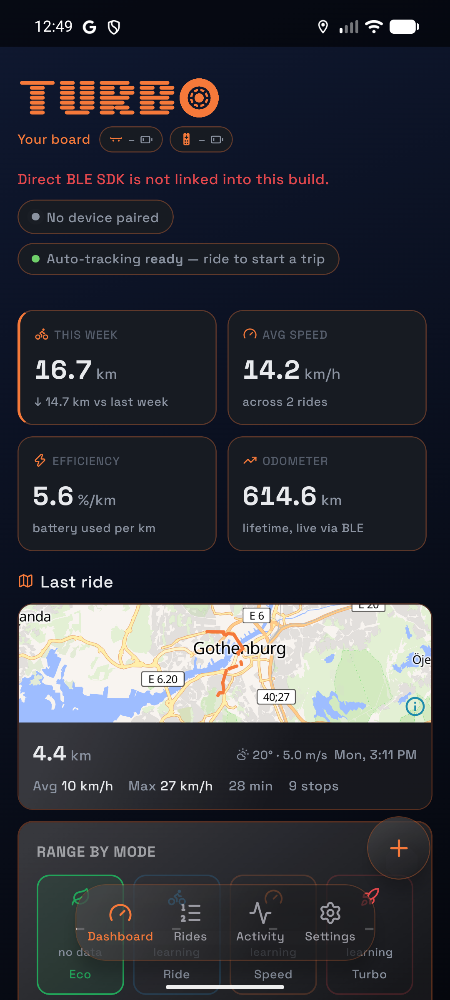
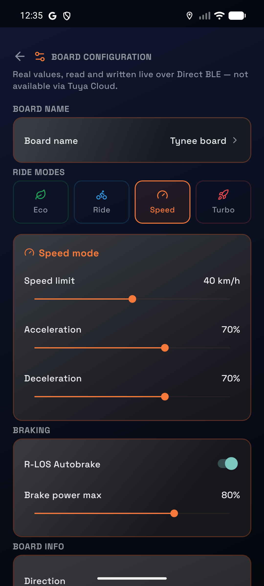
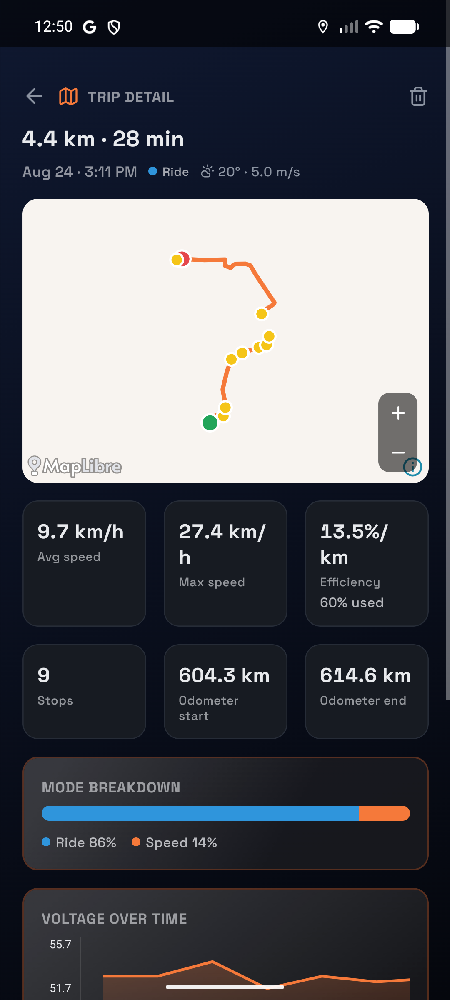
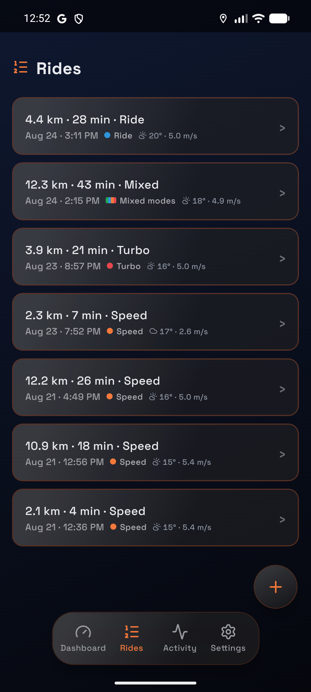
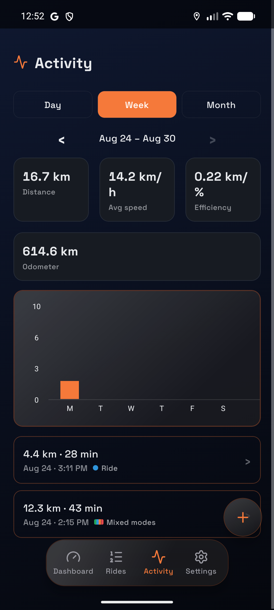
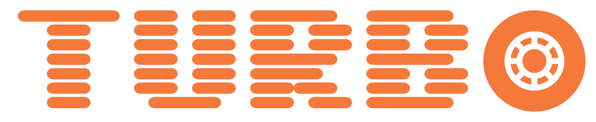

I ride an electric skateboard, a Tuya-connected board that, out of the box, is designed to be controlled through a phone app talking to Tuya's cloud. That's fine for turning it on and picking a mode. It's not fine if you want to actually understand the ride: how much range is really left, what mode you were in when the battery dropped fastest, or whether that "23 km/h" the app showed you for two seconds was real or a Bluetooth hiccup. So I built Turbo, an Android app plus a self-hosted backend, to own that data end to end.

Getting off Tuya's cloud
The stock app path is: phone to Tuya Cloud to board. That works, but it means every read of battery percentage or every settings change round-trips through a third party's servers, with their latency and their availability. I wanted the phone talking to the board directly, so Turbo uses Direct BLE, the Tuya SDK's local Bluetooth path, instead of the cloud API.
In practice that meant working out the board's actual data-point (DP) protocol: which BLE characteristic carries which value, how ride mode, speed limits, acceleration/braking curves, and motor configuration are encoded, and how to write settings back without cloud round-trips. Once that was solved, the payoff was direct: live telemetry (battery, voltage, odometer, active mode) and a fully editable settings screen, all offline-capable, all under the app's own control.
The backend, by design, never touches Bluetooth at all. It has no radio and no board connection. The phone is the only thing that ever talks to the board, and it hands the backend whatever live reading a request needs (e.g. battery percent and voltage get passed as query params to the range-estimate endpoint). That split kept the backend simple and testable, and meant a board firmware quirk never becomes a backend bug.

Why range estimation needed real physics
The obvious way to estimate remaining range is: battery percent times some average km-per-percent number. I started there, and it was wrong often enough to be useless, because "how far one percent of battery goes" isn't a constant. It depends heavily on which of the board's four ride modes (eco, ride, speed, turbo) you're in, since each draws power at a different rate for a different top speed.
So the backend keeps a per-mode efficiency profile, rebuilt from real trip history: kilometres per percent and kilometres per volt, per mode, plus how many trips actually contributed to that number. If there isn't enough history yet for a mode, the estimate for that mode comes back as null, deliberately, not a fabricated zero. That distinction (no data yet vs. a confirmed zero) sounds pedantic until you're staring at a dashboard trying to tell "I haven't ridden in turbo mode enough times to know" apart from "turbo mode gives you zero range," which are very different facts.
On top of the empirical efficiency numbers, there's a second layer: a fitted physics profile per mode, rolling resistance, aerodynamic drag, and drivetrain efficiency, derived from trip history and used to scale the estimate when a live weight/wind reading is available. The empirical number answers "what has actually happened"; the physics model lets that generalize a bit further than raw history alone would.
Making noisy GPS look like a real route
Phone GPS on a ride that weaves through streets and bike paths is noisy enough that a raw recorded track visibly cuts across buildings instead of following the road. Rather than accept that, trip routes get passed through a self-hosted OSRM instance's map-matching endpoint, which snaps the recording onto the actual road graph. If OSRM isn't configured, trips just keep their raw route; enrichment is designed to degrade, never to fail a trip save.
One detail that mattered more than expected: the OSRM data has to be built with the bicycle routing profile, not car. This board spends most of its time on bike paths that a car-oriented road graph simply doesn't carry as edges, so using the wrong profile meant routes silently failed to snap on exactly the segments that mattered most. It's also clipped to a city-sized bounding box rather than a whole country's extract, after a country-wide bicycle extract OOM-killed the extraction process on the modest box this all runs on.
Trips also get enriched with weather (condition codes, feels-like temperature, wind speed) averaged over the ride's time window from a keyless weather API, so a trip detail view can show what the ride actually felt like, not just where it went.




Treating a hobby project's data like it matters
Because trip history is what the range and efficiency models are built from, I didn't want it behind a shared static token the way a lot of personal projects end up. Turbo has real per-user accounts (argon2id-hashed passwords, session tokens with a 90-day sliding expiry) with no public signup; accounts are admin-issued. Every trip, in-progress trip, efficiency profile, and log entry is scoped to the user who created it. There's also a small admin panel for account management and read/debug inspection of the data, deliberately locked to read/delete only for the trip tables, since real writes go through the same enrichment logic a normal trip save uses, so an admin form can't quietly desync a trip from what actually happened.
What this ends up proving
None of this needed to be this thorough for a personal ride tracker. I could have shipped a GPS logger and a battery percentage and called it done. The reason it isn't is the same reason I approach production work the way I do: the interesting bugs live in the edge cases, null versus zero, a board mode with too little history to trust, a route that should have snapped and silently didn't, and a system that's honest about those cases is worth more than one that always has a confident-looking answer.